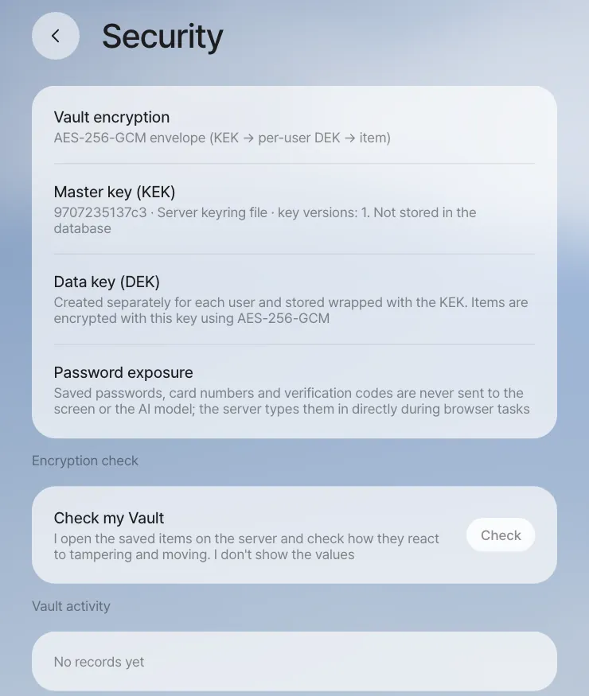

This chapter is for the people who install and run Process GPT Lite in-house. You'll go through teammates and roles, admins, where the keys live, turning off demo login, Vault encryption and key rotation, backups and upgrades, regression tests before an upgrade, and the defaults that protect personal data.
This chapter gathers what to look after when you actually run the components from the previous chapter in-house. You did the installation itself in Chapter 1, so here you cover what comes after it — people and permissions, secrets, backups and upgrades.
Teammates and roles#
You set two things in Settings › Team & roles.
| Item | Details |
|---|---|
| Teammates | An admin adds them by name and email. An account is created even for someone who has never signed in, so they can receive work before their first visit. People who sign in join the team on their own the first time they open the team list. Someone an admin removed doesn't rejoin automatically even if they sign in again; an admin has to add them back |
| Role owners | A process step goes to the teammate who holds that role, and a notification goes to their Home. If it's left empty, whoever started the work (whoever set up the schedule) takes it. The order is per-process owner → company-wide default → whoever started it (Chapter 18) |
On the skills side there's a separate agent owner. Improvement suggestions for a shared skill can be merged only by the person who made the skill and the owner of the agent that has it (Chapter 10).
Who can change what#
| What changes | Who can do it |
|---|---|
Adding and removing teammates (POST · DELETE /api/team) |
Admins |
Role owners — company-wide default (PUT /api/roles, applies to every process) |
Admins |
Role owners — one process only (PUT /api/roles with defId) |
That process's owner (proc_def.owner) and admins. For a process with no owner set, anyone, as in Process GPT |
If you're not an admin, Settings › Team & roles opens read-only ("Only admins can add or remove teammates and assign role owners…", the picture in Chapter 18). The server checks the same rule, so even calling the API directly is refused with "Only administrators can change this." The current Lite screens have no field for per-process owners, so set one by sending {"defId": "<process id>", "role": "<role name>", "userId": "<user id>"} to the API above. Someone removed from the team is also removed from the roles they held.
Admins#
Admins are set by Process GPT's user table (users.is_admin) and the tenant's owner (tenants.owner). The install bundle makes the first admin email you enter at install (ADMIN_EMAIL) an admin. In a tenant with no admin at all (such as a development install started straight from source), the first person to sign in becomes the admin. So before you let several people use a development install, have the operator sign in first.
| What only admins can do | Chapter |
|---|---|
| Add and remove teammates, assign company-wide role owners | Above in this chapter, Chapter 18 |
| View process mining suggestions, register them as processes, put them on hold | Chapter 19 |
| View every process instance and its outputs (normally only participants and owners) | Chapter 18 |
| Open someone else's Workroom (normally only the step owner, participants and the conversation owner) | Chapter 23 |
Where are the keys?#
In a development install, the relay server reads settings in the order environment variables → server/.env → the .env in the Process GPT folder. It doesn't copy secrets over to the Lite side again; it uses Process GPT's as they are. The install bundle keeps them all in a single install/.env. This file is created with permission 0600 at first install, the secrets are filled in automatically, and it stays as it is through upgrades.
| What | Development install | Install bundle (install/.env) |
|---|---|---|
| LLM address, key, models | PRO_LLM_BASE_URL, PRO_LLM_API_KEY, PRO_LLM_MODEL, PRO_LLM_FAST_MODEL (if missing, Process GPT's key) |
LLM_BASE_URL, LLM_API_KEY, LLM_MODEL, LLM_FAST_MODEL |
| DB and login server | POSTGRES_PASSWORD, ANON_KEY, SERVICE_ROLE_KEY in Process GPT's .env |
POSTGRES_PASSWORD, JWT_SECRET, ANON_KEY, SERVICE_ROLE_KEY (generated automatically) |
| Vault master key (KEK) | server/.vault-keyring.json (0600) or PRO_VAULT_KEK |
VAULT_KEK (generated automatically) |
| Schedule callback secret | PRO_CRON_SECRET |
CRON_SECRET (generated automatically) |
| Google login and mail connection | GOOGLE_CLIENT_ID, GOOGLE_CLIENT_SECRET |
Same names |
| Meeting transcription | PRO_TRANSCRIBE_API_KEY |
TRANSCRIBE_API_KEY |
Each user's own secrets (connector tokens, Google mail connection tokens, site logins, cards) go not into a settings file but, encrypted, into that person's Vault.
Don't use development settings as is on a shared server
If PRO_CRON_SECRET is left empty, it uses a default written in the code. On a server several people use, change it to a value you choose. The install bundle generates a random value at install.
Turn off demo login#
Demo login, which lets any email in with the code 000000, is for trying things out.
| Install | Default | How to turn it off |
|---|---|---|
| Development install | On | PRO_DEMO_LOGIN=0 in server/.env (or the environment), then restart the server |
| Install bundle | Off (DEMO_LOGIN=0) |
Leave it as is. Use 1 only for demos on a closed PC |
With it off, the login code goes out by email. If SMTP isn't set up, the install bundle sends it to the bundle's mailbox (http://localhost:18025, which opens only on that PC). Check the current state with demoLogin in /api/config.
Vault encryption and key rotation#
The Vault uses envelope encryption. A master key (KEK) that exists only on the server wraps a data key (DEK), one per user, and the DEK encrypts each item with AES-256-GCM. The database holds only the ciphertext and the wrapped DEKs, so taking just the DB isn't enough to open it. Passwords, card numbers and verification codes don't go to the screen or to the AI model; the server types them in itself during browser tasks (Chapter 6).

Key work is done in the server folder with node scripts/vault-admin.mjs <command>. This script never prints secrets or keys to the screen.
| Command | What it does |
|---|---|
status |
The keyring, the number of DEKs per KEK, the number of items by type |
verify |
Actually opens every item to check it |
rotate-kek |
Makes a new KEK, sets it as the current key and rewraps every DEK |
rewrap |
Rewraps DEKs wrapped with a retired KEK with the current KEK (after you've changed the KEK through an environment variable) |
prune-kek |
Removes from the keyring retired KEKs that no DEK uses |
rotate-dek <user id \| --all> |
Makes a new DEK and re-encrypts the items |
Restart the server after rotate-kek or prune-kek. If you supply the KEK through an environment variable (PRO_VAULT_KEK), rotate-kek is refused. Put the new key in PRO_VAULT_KEK and the old one in PRO_VAULT_KEK_RETIRED, restart, and then run rewrap.
Backups and upgrades#
Lite has no backup feature of its own. Below is the recommended procedure. At a quiet time, copy the following five things together at the same point in time. In particular, if you lose the .env that holds the KEK, the Vault can't be recovered.
| What | Where |
|---|---|
| Database (conversations, cards, processes, team, Vault ciphertext) | The db service. For example: docker compose exec -T db pg_dump -U postgres postgres > lite.sql |
| File storage (the originals behind document and picture cards) | The storage-data volume |
| Shared folders (git) and ArtCraft web builds | The server-data volume (/data/folders, /data/craft) |
| Agent working folders and skills | LITE_DATA_DIR/deepagents/ (workspace, skills) |
| Secrets | install/.env (for a development install, server/.vault-keyring.json and the two .env files) |
Upgrading is a single line: ./install.sh --upgrade. It gets the source (git pull), builds or pulls the images, runs the DB migrations and restarts. Secrets are kept. The recommended order is backup → upgrade → regression test.
Regression tests before an upgrade#
The repository's e2e/ has Playwright tests that re-check the features so far, in three tiers.
| Tier | What it checks | Model calls | Time | Command |
|---|---|---|---|---|
| smoke | Startup and login, every screen loads without errors, the security fences (403 for someone else's Workroom, terminal tickets, no Vault secrets, panel row security) | None | About 1 min | npm run test:smoke |
| feature | Features checked with fixed data (shared folders, skill sharing, panel apps, schedules, team, processes, editor, live editing) | None | A few min | npm run test:feature |
| agent | The user journeys from the demo videos, end to end with real models | Yes | 30–90 min | npm run test:agent |
cd e2e && npm install && npx playwright install chromium
PGPT_URL=http://localhost:18080 MAILPIT_URL=http://localhost:18025 npm run test:smoke
- The tests use only dedicated test accounts and delete the data they made when they finish. If a run was cut off, run
npm run cleanup. - Results are kept in
reports/<tier>/html(HTML report) andjunit.xml(for CI). - In an install without ArtCraft (installed without
--with-craft) or without the routing model server, those tests end not as failures but as skipped, with the reason.
We recommend running smoke and feature on every upgrade, and agent too before a big release.
Defaults that protect personal data#
| Area | Default behavior |
|---|---|
| Vault and browser | Secret values don't go to the model. Secret field values are removed from the page summary the browser agent sees, and those fields are blurred in the screenshots sent to the model |
| Panel apps | Each field has a sensitivity (public, internal, personal, sensitive). Personal fields are visible only to the person, the author and the folder owner; sensitive fields only to the person and the folder owner. Team totals of sensitive numbers appear only once three or more people are included. When the maker lowers a level, a confirmation and a record are kept (Chapter 12) |
| Team sharing | The server checks that only the recipient can open it, and the recipient edits their own copy (Chapter 14) |
| Meetings | Only the words of people who consented to transcription and recording are transcribed. The meeting minutes list the people "who didn't consent." The helper can be turned off per room. To turn off the helper for the whole server, use MEETING_AGENT=0 in the install bundle or PRO_MEETING_AGENT=0 in a development install. To turn off meetings entirely, use PRO_MEETINGS=0 in a development install (Chapter 16) |
| Workroom | Only owners, participants, the conversation owner and admins. The terminal opens with a one-time ticket and doesn't pass on the server's secret environment variables |
| Opening to the outside | If you open a development server through a tunnel, the tunnel address is protected by an access password (server/.public-access). When you open the install bundle to the internet, put an HTTPS reverse proxy in front of it |
Known limitations
- In the current version, the files behind document and picture cards are uploaded to public storage at hard-to-guess addresses, so anyone who knows an address can open it without signing in. Keep this in mind if you run it open to the outside.
- Browser agent sessions live in server memory, so restarting the server marks the tasks in progress as "Stopped." Restart the server when no browser tasks are running.
- The agent's sandbox shell is shared per company (tenant), not per user. The assistant is instructed to use only my attachments, shares I received, this conversation's folder and shared folders, and other people's conversation folders are blocked, but files someone left at the top of the workspace (
/workspace) can be read through the shell. Tell people to keep material meant only for certain teammates in a shared folder with set members (Chapter 13). - To check what goes to the model, start the server with
PRO_LLM_TRACE=<file>(off by default). The text of the model requests the relay server makes itself (not images) piles up in that file; requests deepagents makes aren't included.
That wraps up Part 7. In the next chapter, you'll do a final project that uses everything you've learned so far on one new customer request, from start to finish (Chapter 26).
Check your understanding
- Seoyeon Park is leaving the company, and you want to block her account. Besides removing her from the team, what should you check?
- You moved the server to a new PC and brought only a database backup. What won't work?
- After an upgrade, smoke passed, but in feature all the ArtCraft tests are "skipped." Is that a failure?
Answer
- When an admin removes her from the team, she's also removed from her roles, so set new owners for the roles she held (if left empty, whoever started the work takes it). Someone removed doesn't rejoin the team automatically even if they sign in again. To block the login itself, make sure demo login is off, and block the account in the login server (Supabase Auth).
- Without the KEK, Vault items (logins, cards, connector tokens) can't be opened. Without file storage, the documents and pictures on cards won't open, and without the shared folder volume, the folders' history and variations are gone.
- No. If you installed without
--with-craft, there are no ArtCraft apps, so those tests end as skipped, with the reason. Ifcraftin/api/configsays the apps are there and they're still skipped, that's when you look for the cause.